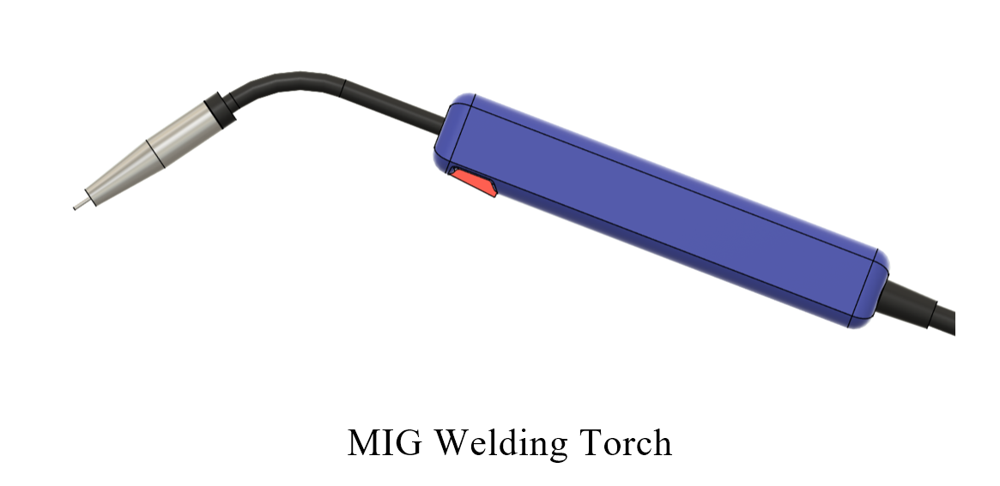

Theory
Metal Inert Gas (MIG) welding, also known as Gas Metal Arc Welding (GMAW), is a semi-automatic or automatic arc welding process in which a continuous consumable wire electrode is fed through a welding gun into the weld pool, joining the base metals together. An inert or semi-inert shielding gas is also supplied through the welding gun to protect the weld from contamination.
MIG welding is widely used in fabrication industries due to its high deposition rate, ease of use, minimal slag, and ability to weld a variety of metals such as steel, stainless steel, and aluminum. It is especially suitable for welding butt joints, fillet joints, and groove welds in both thin and thick materials.

Butt Joint with V-Groove
A butt joint is formed when two metal pieces are aligned in the same plane and welded at the adjoining edges. When the base metal is thick, a V-groove is introduced to increase the weld area and ensure proper penetration throughout the thickness. This groove allows for better fusion and stronger joints. The angle and depth of the V-groove are carefully prepared depending on the material thickness and welding process used.

Working Principle of MIG Welding
In MIG welding, an electric arc forms between the consumable wire electrode and the workpiece metal, heating the metals and causing them to melt and join. The wire electrode acts both as filler material and as a conductor for the arc. The inert shielding gas ensures that the arc and molten weld pool are protected from oxygen, nitrogen, and moisture in the atmosphere, which can cause weld defects such as porosity, spatter, and oxidation.

Shielding Gases in MIG Welding
MIG welding employs power source with flat or dropping characteristics mostly DC generator or AC transformers with rectifier is used. AC is not generally preferred because of unequal/burn off rates in positive and negative half cycle. DCRP (Direct current reverse polarity) gives deeper penetration and is sed for thicker job. Shielding gases used include argon, helium, carbon dioxide or nitrogen and the mixture thereof. Argon or helium is used for welding of Aluminum, Magnesium, and Copper and Carbon dioxide for mild Steel and nitrogen for copper. Argon + CO₂ are used for welding Mild steel, low alloy steel and stainless steels, whereas as a mixture of argon, helium and CO₂ is used for welding austenitic stainless steel. The choice of shielding gas has a significant effect on arc stability, weld penetration, bead shape, spatter, and overall weld quality.
- Pure Argon (Ar):
o Provides a smooth, stable arc.
o Produces a narrow, deep penetration.
o Suitable for non-ferrous metals like aluminum and copper alloys. - Argon + Carbon Dioxide (Ar+CO₂):
o Common mixture: 75% Argon + 25% CO₂ or 80% Ar + 20% CO₂.
o Improves arc stability and penetration on ferrous metals.
o Widely used for mild steel welding. - 100% CO₂:
o Inexpensive and provides deep penetration.
o Can cause more spatter and less stable arc than argon-based mixtures.
o Suitable for thick sections and structural steel. - Argon + Oxygen (Ar+O₂):
o Small percentages (1–5%) of oxygen are added to improve arc stability.
o Encourages good wetting and smoother weld surfaces.
The proper selection of shielding gas depends on the material being welded, desired weld characteristics, and cost considerations.
MIG Welding Equipment and Setup
- Power Source: Constant voltage DC power source (typically DCEP – electrode positive).
- Wire Feeder: Feeds the consumable wire electrode at a controlled speed.
- Welding Gun: Delivers current, wire, and shielding gas to the weld area.
- Shielding Gas Supply: Gas cylinder with regulator and flow meter to control gas flow rate (typically 20-30 CFH).
- Consumable Wire Electrodes: Typically, ER70S-6 for mild steel, ER308 for stainless steel, etc.
Advantages of MIG Welding
- High deposition rate and faster welding speed.
- Easier to learn and automate compared to other welding processes.
- Clean welds with minimal post-weld cleaning.
- Applicable to both thin and thick materials.
- Can be used in all positions (flat, horizontal, vertical, and overhead).
Common Defects in MIG Welding
- Porosity: Caused by moisture or inadequate shielding.
- Lack of Fusion: Poor arc control or travel speed.
- Spatter:Incorrect voltage or gas selection.
- Undercut:Excessive heat or incorrect torch angle.
Control of voltage, wire feed rate, torch angle, gas flow rate, and travel speed are essential for quality welding.
Apparatus required:
- MIG welding machine
- Welding gun with copper nozzle
- Mild steel V-groove plates
- Filler wire spool
- Shielding gas cylinder (Argon-CO₂ mix or pure CO₂)
- Wire feeder unit
- Welding helmet and gloves
- Ground clamp and welding table
- Chipping hammer and wire brush